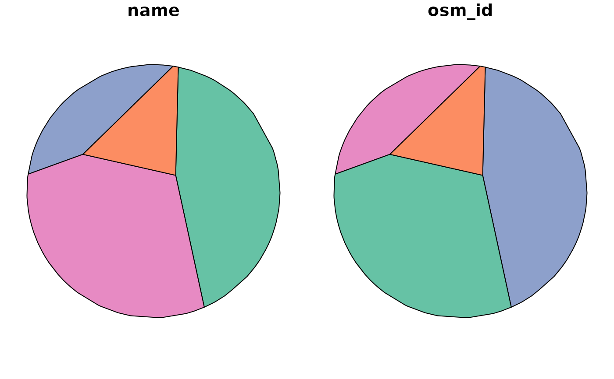

Generate voronoi polygons from a bounding box and points
Examples
points = points_oldenburg
poly = sf::st_convex_hull(sf::st_union(net_oldenburg_raw))
nvoi = iso_vnoi(points, poly)
#> Warning: st_voronoi does not correctly triangulate longitude/latitude data
#> Warning: attribute variables are assumed to be spatially constant throughout all geometries
plot(nvoi)
plot(points, add = TRUE)
#> Warning: ignoring all but the first attribute
